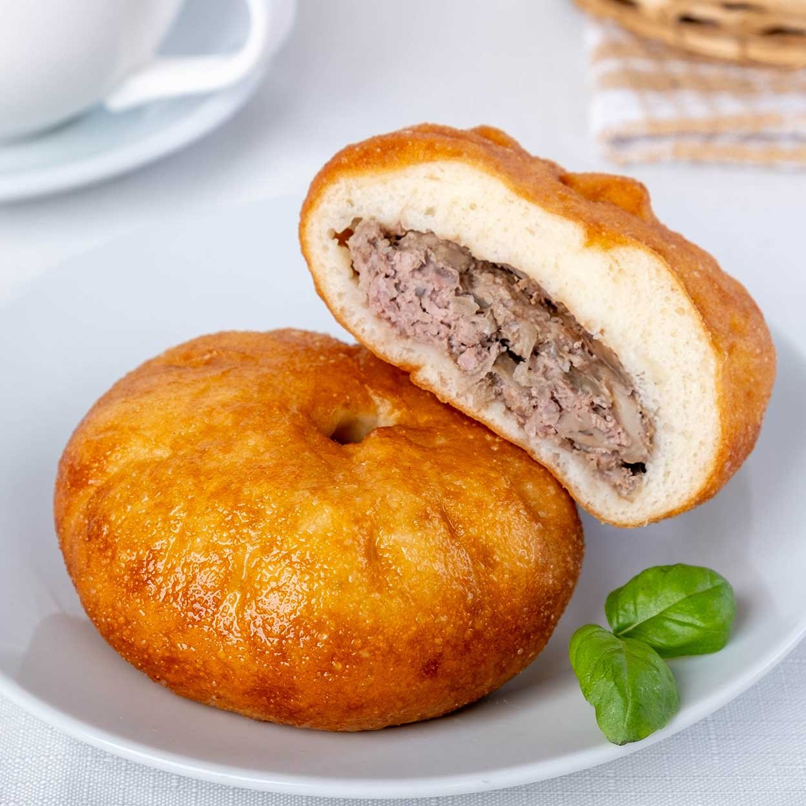

Belyash

Description
Belyash is an individual-sized fried dough pastry common for Volga Tatar and Bashkir cuisines.
Ingredients:
- Wheat flour
- Yeast
- Sugar and salt
- Water
- Vegetable oil
- Minced meat
- Onions
- Salt and pepper
Steps:
- Mix your yeast, sugar, salt, flour in some warm water
- Add some oil and all the flour you have
- Mix your dough and make into a ball
- Mix your minced meat with onions, salt and pepper
- Beat the dough and lay it out, separate in into little balls
- Squish every ball and put your meat filling in it
- Fold the dough with filling inside
- Heat up some oil in a pan and put your belyashi in it
- Fry for about 5 minutes on each side
- You're done.